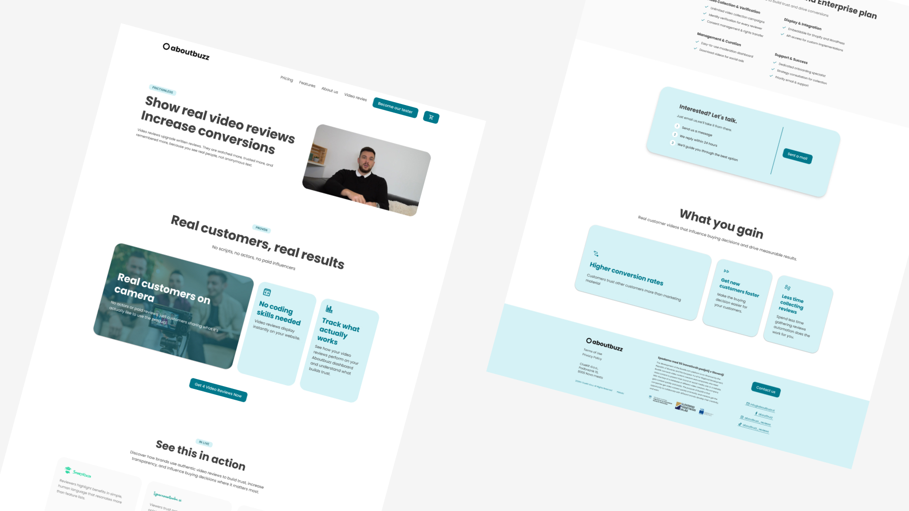
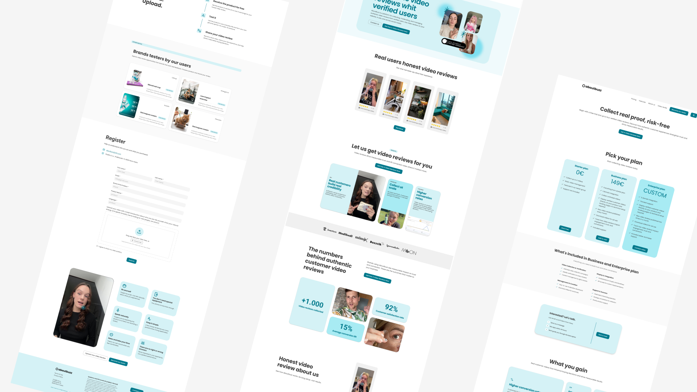
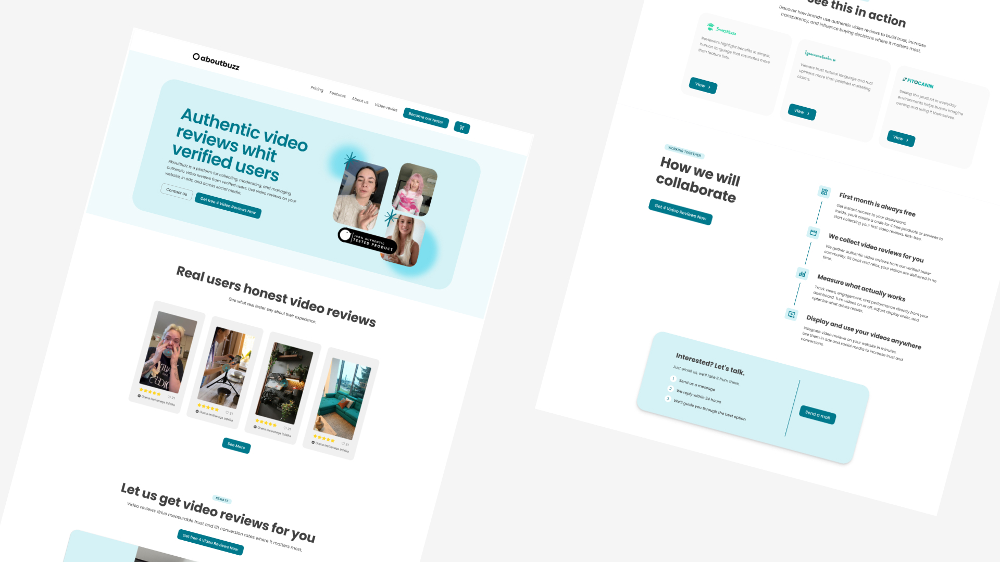
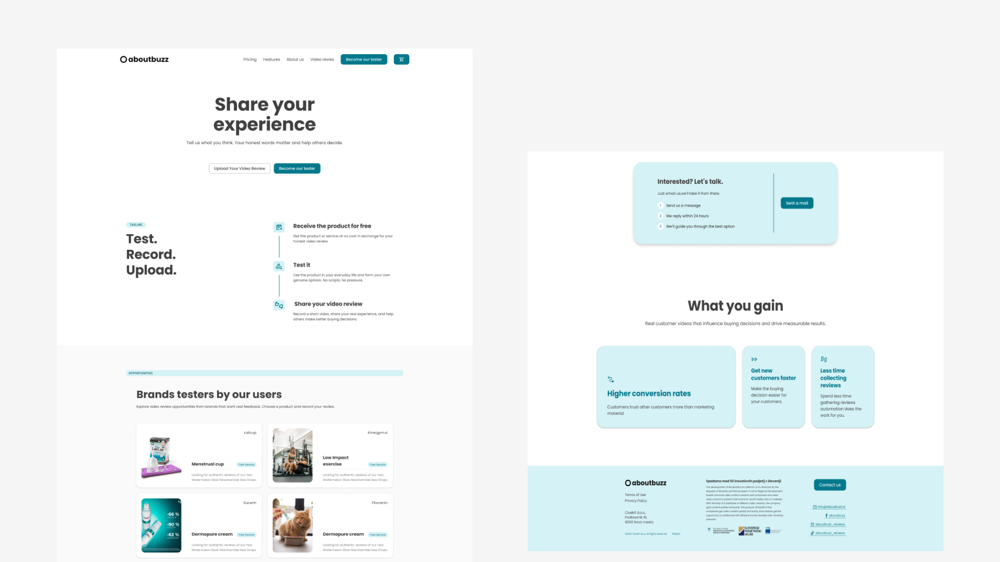
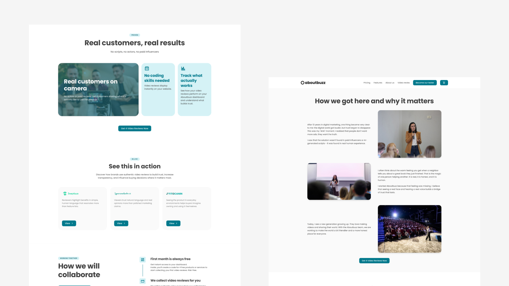
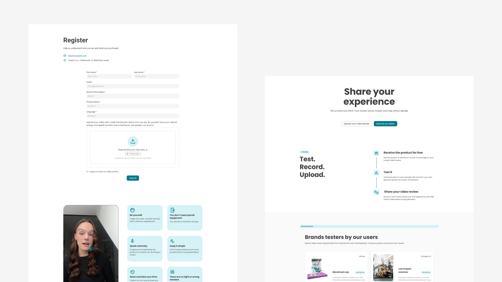
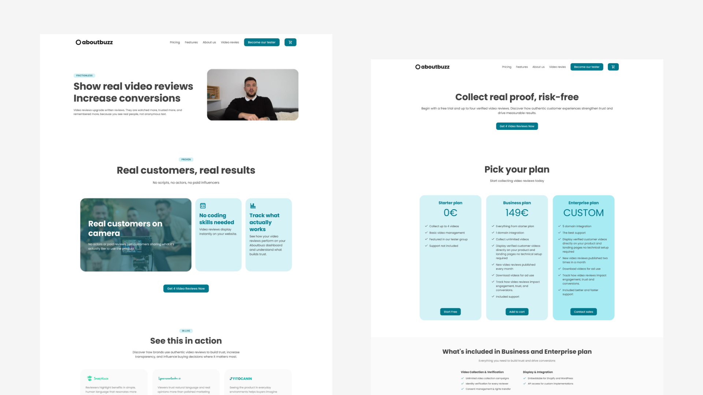

This project was developed in collaboration with a marketing agency that produces authentic video reviews for B2C brands. The goal was to design a platform that works both as a professional tool for businesses and as an engaging space for users to discover review content. I focused on creating a clear structure that allows companies to manage video reviews while also presenting them in a public library-style experience. When permitted by clients, selected videos can be published on the platform so users can watch. A key design focus was building trust by highlighting real buyers and authentic experiences instead of scripted testimonials.
UX/UI
Research
Development
End-to-end UX/UI design
Business goal alignment,
Mapped out workflows,
Trust-driven interaction design,


The project focused on designing a website that presents the agency’s video review service to companies while also attracting potential video reviewers. The main challenge was to clearly communicate the value of video reviews to businesses and show how they outperform traditional written reviews in authenticity and engagement. At the same time, the website needed to allow interested users to apply to become video reviewers through a simple and clear recruitment flow. This required balancing two audiences on one site: companies looking for trustworthy customer feedback and individuals willing to create review content. The design therefore focused on building trust, explaining the business benefits, and creating a clear funnel for both recruiting reviewers and converting potential clients.
This project belongs to the digital marketing and customer engagement industry, where agencies help brands strengthen their presence in the B2C market. Companies in this space focus on helping businesses build trust, increase conversion rates, and communicate product value more effectively to consumers. Marketing agencies typically support brands through content creation, campaign strategy, and customer feedback solutions that influence purchasing decisions. As online shopping continues to grow, companies increasingly rely on authentic customer experiences to differentiate themselves in competitive markets. This creates opportunities for specialized marketing services that connect brands with real customers and help present their products in a credible and engaging way.
The website serves two primary user groups with different goals and expectations. The first group consists of visitors who want to browse and watch video reviews to learn more about products through real customer experiences. The second group includes individuals interested in becoming video reviewers, who need clear information about the process and a simple way to apply. In addition to these users, the website also targets business clients companies looking for a service that provides authentic video reviews for their products. These businesses visit the site to understand the value of the service, how the process works, and how it can benefit their brand. The design therefore needed to guide each audience quickly to the information most relevant to them.

Methodology
For this project, I conducted a comprehensive research phase to understand the needs of both business clients and potential video reviewers, as well as the overall market landscape. This included user interviews with reviewers and companies, comparative analysis of different review formats and market and competitor research to identify trends and opportunities. The goal was to uncover insights that would inform the website’s structure, messaging and user flows.
I conducted 30 in-depth interviews with both video reviewers and companies using the service. For reviewers, I explored their motivations, expectations, and what makes them choose to produce video content. For companies, I focused on why they adopted video reviews, how they perceive their value, and what outcomes they hoped to achieve. These interviews helped me understand both sides of the ecosystem and their unique needs.
I analyzed the B2C marketing and customer feedback industry to understand trends, opportunities, and user expectations. This helped identify what companies value in review services and how to position video reviews as a more effective solution than traditional methods.
I synthesized research findings into actionable insights that guided the website’s structure, content strategy, and user flows. The insights ensured that both potential reviewers and business clients could quickly find relevant information and complete their goals. They also helped define the messaging that builds trust, showcases the benefits of video reviews, and positions the service as a credible, engaging solution for B2C marketing.
The design process started by defining the color palette, which set the foundation for the website’s visual identity. The colors were chosen based on the nature of the product and the image the company wanted to communicate. From there, I developed the visual style and aligned it closely with the website’s content and messaging. The goal was to create a clean and modern design that still feels professional and trustworthy. This helped establish a balance between a fresh visual experience and a more traditional tone suitable for business clients.


The website is used as an informational space for companies that are interested in using video reviews for their products. It explains the service, its benefits, and how video reviews can be more effective and trustworthy than traditional written reviews. At the same time, the website allows visitors to explore existing video reviews and see real examples of how the service works. Users who are interested can also apply to become video reviewers and learn more about the process. This creates a space that both presents the service to businesses and engages people who want to participate as reviewers.